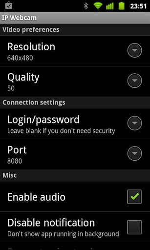

IP Webcam — Используем устройство с Android в роли веб-камеры
Веб-камера предоставляет отличные возможности для общения с семьёй, коллегами и клиентами. Однако, если у вас нет веб-камеры и лишних 30-80 долларов для её покупки, то почему бы не попробовать использовать ваше Android-устройство для решения соответствующих задач? Ниже будет описано, как использовать заднюю камеру вашего устройства в роли веб-камеры, поэтому наличие фронтальной камеры не является обязательным. В то же время ничто не мешает вам при желании применить аналогичные действия для использования фронтальной камеры.
Примечание: использование устройства в качестве веб-камеры быстро расходует заряд аккумулятора, поскольку дисплей устройства будет постоянно активен, поэтому во время подобной эксплуатации вашего девайса рекомендуется подключить к нему блок питания.
Итак, приступим. Для начала необходимо установить на ваше Android-устройство копию приложения IP Webcam. На компьютер с ОС Windows устанавливаем программу IP Camera Adapter. Желательно, чтобы на вашем ПК был установлен веб-браузер типа Google Chrome или Firefox, поскольку данное приложение не очень хорошо работает с Internet Explorer. После того, как всё будет установлено, можно приступить к настройке:
Шаг 1: Запускаем Android-приложение IP Webcam и указываем желаемые настройки разрешения (Resolution), качества (Quality), ориентации (Orientation) и FPS (FPS Limit). После этого опускаемся вниз и нажимаем «Запустить сервер» (Start Server). Совет: рекомендуем вам также установить пароль и имя пользователя (Login/password). Это делается не только в целях безопасности (вы же не хотите, чтобы ваша камера была доступна посторонним), но ещё и по той причине, что в противном случае адаптер может просто отказаться работать.
Шаг 2: Откройте в веб-браузере Chrome или Firefox IP-адрес, который появился на вашем устройстве внизу дисплея. Убедитесь, что вы ввели полный адрес, включая порт..
Шаг 3: Сделайте необходимые настройки; мы рекомендуем выбрать пункт «Использовать встроенный просмотрщик» (Use browser built-in viewer). После этого вы должны увидеть ваше видео в окне веб-браузера. Если этого не произошло, то вернитесь назад и попробуйте другие настройки.
Шаг 4: Откройте программу IP Camera Adapter, установленную на вашем компьютере и введите необходимую информацию: адрес вашей камеры (в данном случае не забудьте добавить к нему приставку /videofeed), имя пользователя и пароль.
Шаг 5: Далее нажмите «Автоопределение» (Autodetect) рядом с настройками разрешения, после чего можно нажимать кнопку «Применить» (Apply). Теперь осталось только запустить или перезагрузить приложение, в котором вы планируете использовать веб-камеру (например, Skype, ManyCam и т. д.).
Имейте в виду, что для передачи звука вам, вероятно, придётся использовать гарнитуру, поскольку пока передача аудио поддерживается очень плохо. Возможно описанный способ не очень хорошо подходит для частого использования, но если вам резко понадобилась веб-камера, а под рукой её не оказалось, то возможности вашего устройства могут оказаться весьма кстати. Ну и конечно не забудьте написать нам, если вам удалось повторить действия, описанные в этой статье.